싱크대막힘 증상은 원인 구간부터 확인합니다
물이 천천히 빠지는 증상, 싱크대 물이 안 내려가는 증상, 싱크대 역류, 악취와 반복 막힘 등 같은 싱크대막힘 증상이라도 싱크대 배수구와 트랩, 주방 배수관 또는 연결된 공용배관 등 막힌 구간이 다를 수 있습니다. 신라건축설비는 증상만 보고 작업을 정하지 않고 현장 상태를 확인한 뒤 필요한 작업 범위와 비용 조건을 먼저 안내합니다.
실제 현장에서 확인되는 주요 원인: 기름때·슬러지·음식물 찌꺼기 축적, 주방 배수관 내부 오염과 배관 구간 막힘
주요 점검·작업: 석션·샤프트·배관내시경 점검과 배관 스케일링
싱크대막힘 원인부터 싱크대뚫는업체 선택까지
싱크대막힘 원인·싱크대역류·싱크대 물 안내려감·주방 배수구 막힘·기름때 막힘·배수관 청소·반복되는 싱크대막힘처럼 검색하는 상황은 표현은 달라도 같은 배수 문제에서 시작되는 경우가 많습니다. 신라건축설비는 단순 관통 여부만 보지 않고 증상, 막힘 위치, 이물질 여부와 배관 상태를 함께 확인해 필요한 작업을 판단합니다.
싱크대뚫는업체 선택 전 실제 작업사례를 확인하세요
광고 문구만이 아니라 실제로 어떤 증상을 어떤 장비로 진단하고 해결했는지가 중요합니다. 현재 신라건축설비 홈페이지에는 싱크대막힘 실제 현장사례 28건이 공개되어 있으며 지역, 원인, 작업 과정과 결과를 확인할 수 있습니다.
지역별 싱크대막힘·싱크대뚫는업체 실제 출동 기록
최근 싱크대막힘 해결사례
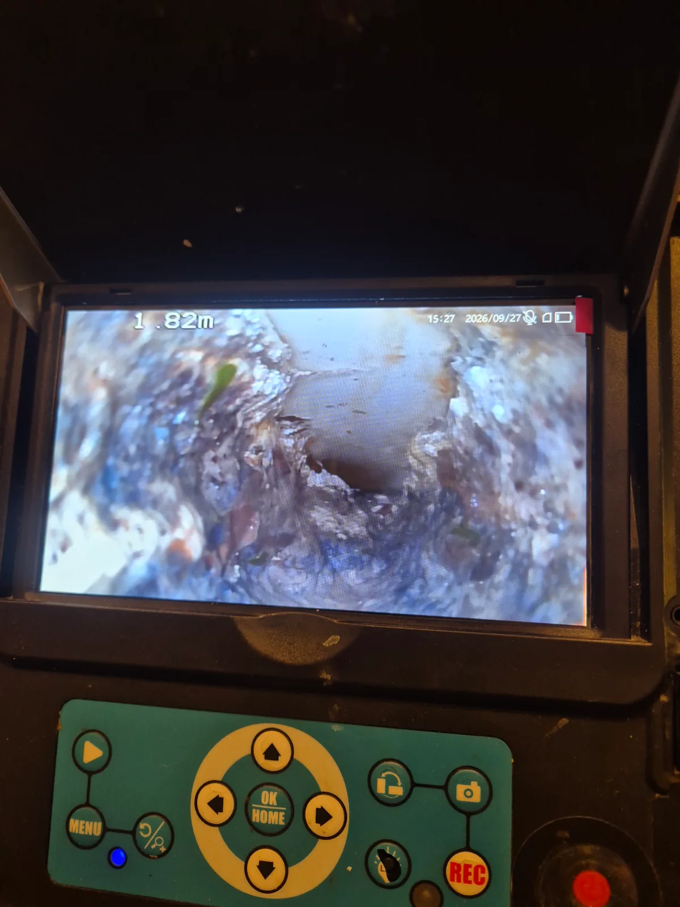
중구 순화동 싱크대막힘 | 서울 중구 순화동 아파트 싱크대막힘 물길을 차지한 이물질
중구 순화동 싱크대막힘 아파트 싱크대 배관 안에 이물질이 두껍게 쌓여 물길이 좁아진 현장입니다 내시경으로 상태를 확인하고 샤프트로 배관스케일링을
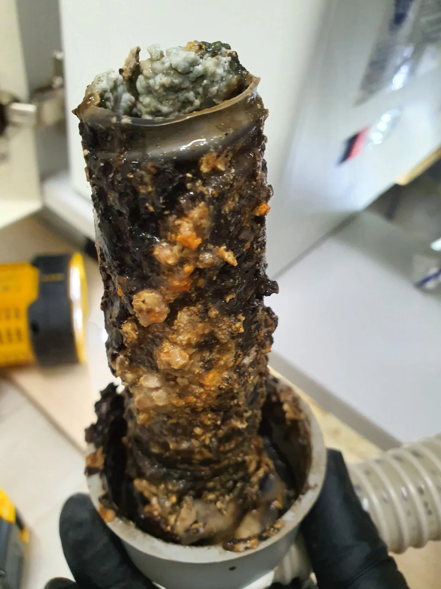
성남시 중원구 중앙동 싱크대막힘 | 입구부터 꽉 막힌 배관 샤프트로 전체 구간
성남시 중원구 중앙동 싱크대막힘 싱크대 하부장에서 냄새가 올라와 주름관을 분리했더니 이물질로 꽉 막혀 있었습니다 석션으로 입구를 정리하고
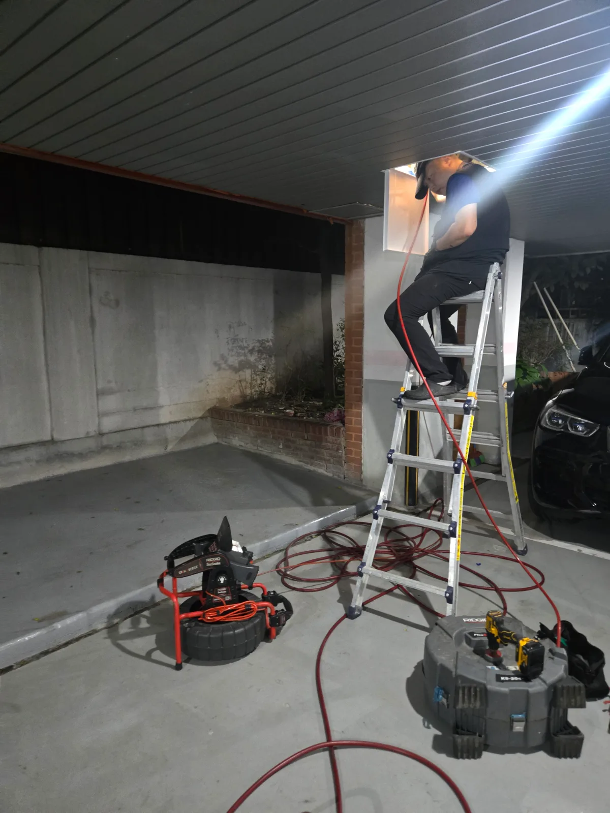
서초구 양재동 싱크대막힘 | 공용배관 하수구막힘 샤프트와 고압세척 해결
서초구 양재동 싱크대막힘 현장에서 실내 배관과 공용배관을 함께 점검한 뒤 샤프트 작업과 고압세척으로 하수구막힘을 해결했습니다
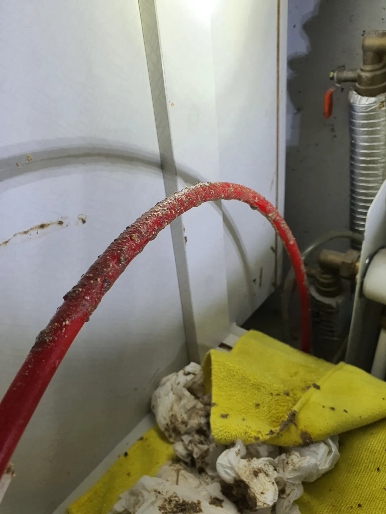
안양시 동안구 호계동 싱크대막힘 | 안양 동안구 호계동 싱크대막힘 하부 배관 샤프트
안양시 동안구 호계동 싱크대막힘 안양 동안구 호계동 싱크대막힘 현장에서 하부 배관에 샤프트 장비를 투입해 배수 흐름을 방해하는 오염물을
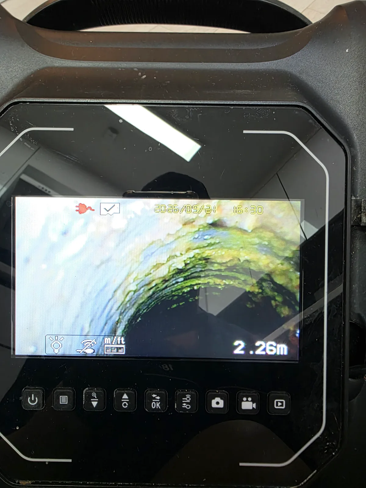
강남구 압구정동 싱크대막힘 | 고급빌라 배수 불량, 입구부터 막혀 있었다
압구정동 고급빌라 싱크대 물이 잘 빠지지 않아 확인했습니다. 입구의 이물질을 먼저 제거한 뒤 내부 오염을 확인하고 배수 통로를 정리했습니다.
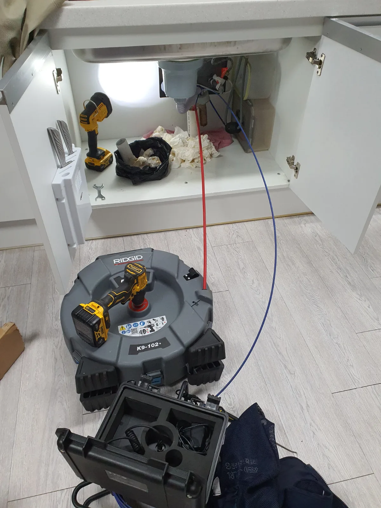
강남구 대치동 싱크대막힘 | 오래된 아파트 싱크대막힘 배관내시경 진단 후 리지드
강남구 대치동 싱크대막힘 오래된 아파트 싱크대막힘 현장에 출동해 배관 내시경으로 내부 상태와 막힘 구간을 점검하고 RIDGID K9 102
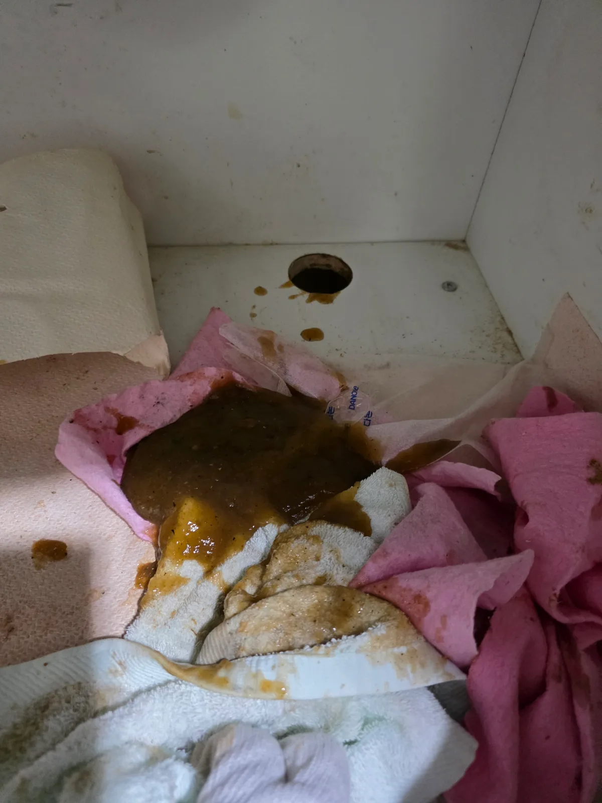
강남구 역삼동 싱크대막힘 | 물 틀자 바닥 배수구로 역류한 이유
역삼동에서 싱크대 물을 틀자 바닥 배수구로 오수가 역류했습니다. 입구에 쌓인 갈색 기름때와 이물질을 제거하고 배관 안쪽을 정리한 뒤 정상 배수를 확인했습니다.
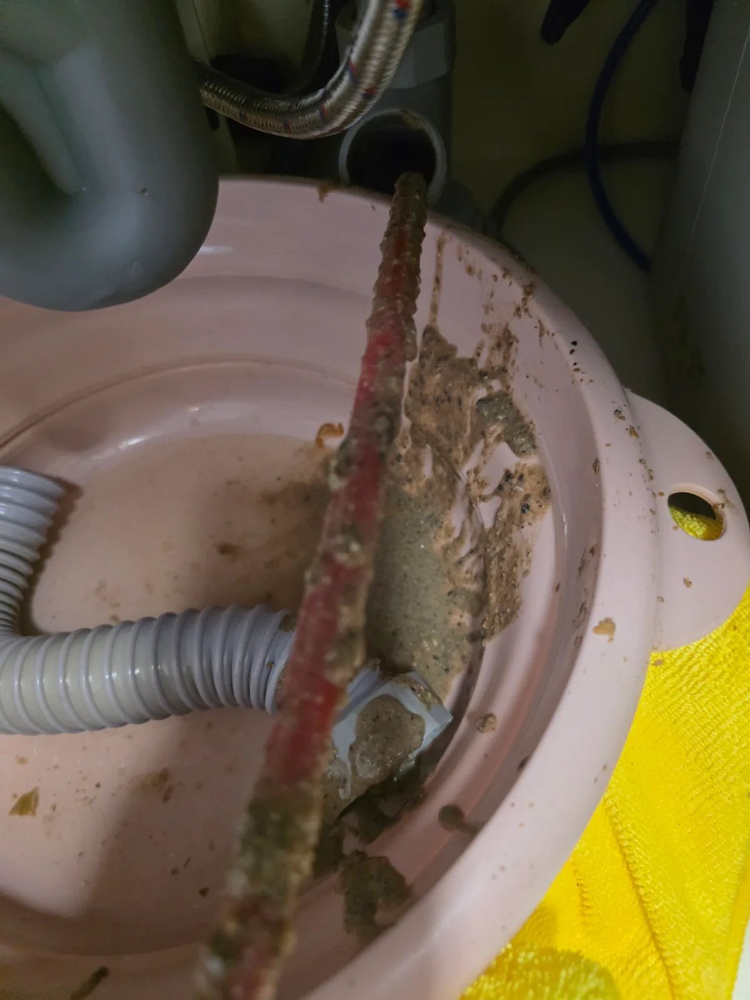
서울 강남구 개포동 싱크대막힘 | 샤프트로 축적물 제거 후 배관고압세척
서울 강남구 개포동 싱크대막힘 신라건축설비가 개포동 싱크대 하부 배관을 내시경으로 점검하고 샤프트로 내부 축적물을 제거한 뒤 고압세척과 내시경
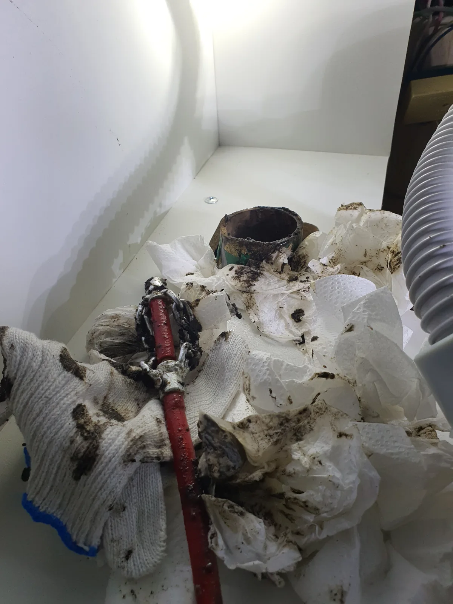
용인 수지구 풍덕천동 싱크대막힘 | 노후 주철배관 슬러지 제거와 내시경 점검
수지구 풍덕천동 싱크대막힘 오래된 아파트의 싱크대 하부 주철배관에 쌓인 검은 기름 슬러지를 샤프트로 제거하고 통수 후 배관 내시경으로 내부
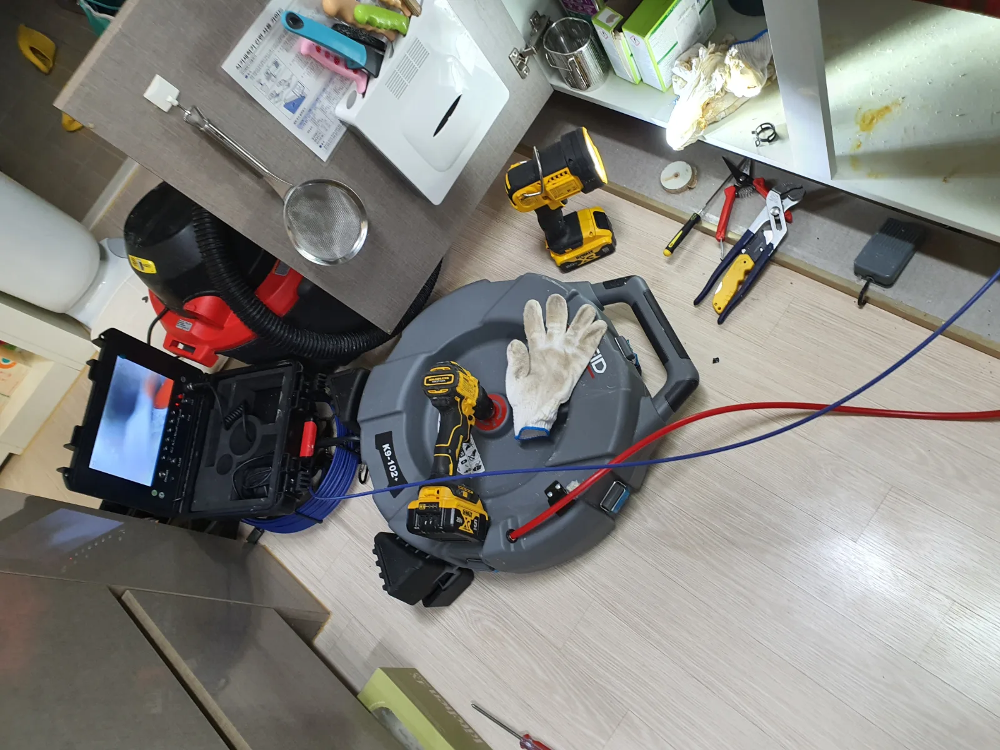
화성시 동탄구 청계동 싱크대막힘 | 동탄 청계동 싱크대막힘 자정에 출동한 아파트
화성시 동탄구 청계동 싱크대막힘 아파트에 자정에 도착해 싱크대 배관의 기름때 막힘을 점검했습니다 석션과 리지드 K9 102 샤프트 배관스케일링을
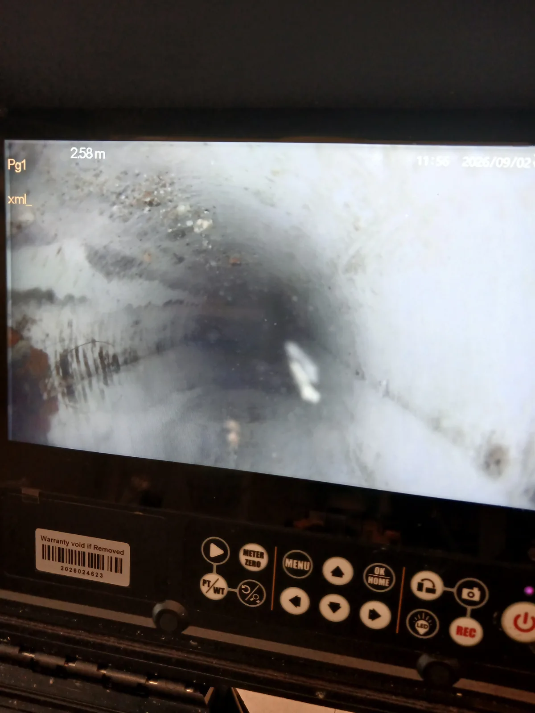
파주시 동패동 싱크대막힘 | 굳은 기름때 석션 세척
파주시 동패동 싱크대막힘 샤프트 배관스케일링과 석션으로 배관 내부의 굳은 기름때를 처리하는 통수 작업 진행
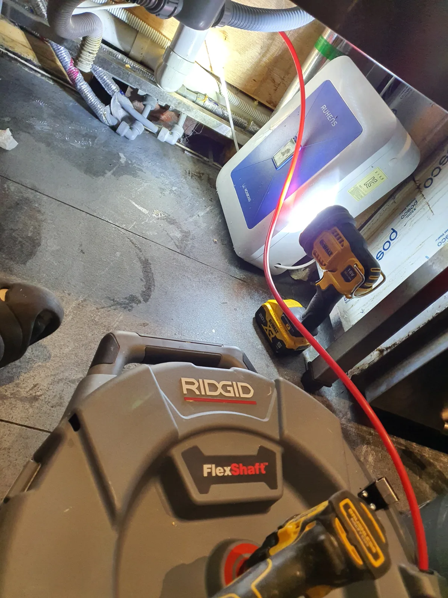
동작구 상도동 싱크대막힘 | 내시경 진단과 기름때 제거
동작구 상도동 싱크대막힘 내시경 진단 후 샤프트 배관스케일링으로 기름 슬러지와 음식물 찌꺼기 제거 및 통수 확인
서울·경기·인천 싱크대막힘 출동
서울 16건 · 경기 11건 · 인천 1건의 실제 기록을 기반으로 지역별 사례를 연결합니다. 새로운 현장사례가 등록되면 해당 서비스와 지역 허브에 함께 누적됩니다.